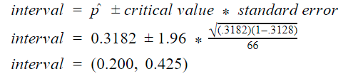

<body style="background-color: #5B3B8C;">  </body>


<style>
    .grid-container {
        display: grid;
        grid-template-rows: 200px 50px;
        grid-template-columns: auto auto auto auto auto;
        grid-gap: 10px;
        padding: 10px;
    }
    p.ex1 {
  text-align: center;
  }
  h2.ex1 {
  text-align: center;
}

    .column {
    float: left;
    width: 50%;
    text-align: center;
}
    .grid-container > div {
        text-align: center;
        padding: 10px;
        font-size: 30px;
    }

    h1 {
        font-family: "verdana";
        text-align: center;
        font-size:55px;
    }
    h2 {
        font-family: "Trebuchet MS";

        font-size:25px
    }
    html, body {
        background-color: #5B3B8C;
    }
    p {
        font-family: "verdana"
    }
    a.btn {
        font-family: "Trebuchet MS";
        width: 30%;
    }
    .btn:link,
    .btn:visited {
        text-transform: uppercase;
        text-decoration: none;
        display: inline-block;
        border-radius: 100px;
        transition: all .2s;
        color: lightpink;
        font-size: 20px;
        font-weight: 900;
    }

    .btn:hover {
        transform: translateY(-3px);
        box-shadow: 0 20px 40px rgba(255, 255, 255, 0.2);
    }

    .btn:active {
        transform: translateY(-1px);
        box-shadow: 0 5px 10px rgba(255, 255, 255, 0.2);
    }

    a.name {
        font-family: verdana;
        font-size: 20px;
    }

    body.dark-mode {
        background-color: #35363a;
    }
    html.dark-mode {
        background-color: #35363a;
    }
</style>


<center>
  <h1> Confidence Interval </h1>
  <embed type="text/html" src="int.html" width="1000" height="500" >
  <p> Objective: <br>We want to create an interval that captures the true difference in proportion of Mac users in Del Norte and the proportion of mac users worldwide with a 95% confidence level.
    <br>(1 sample confidence interval for proportions)
 </p>
</center>
<br>
<br>
<h2 class = "ex1"> Confidence Level:</h2>
<p class = "ex1"> a = 0.05 (95% confidence)</p>
<br>
<br>
<h2 class = "ex1"> Calculations: </h2>
<center></center><br><br><br>


<h2 class = "ex1"> Analysis: </h2>
<p class="ex1">We are 95% confident that the interval (.200,.425) captures the true proportion of Mac users in Del Norte. <br><br> Since our entire confidence interval (.200,.425) is above .1584,<br> we can reasonably conclude that there is a higher proportion of Mac users in Del Norte than worldwide.

</p>
<br>
<br>
<br>
